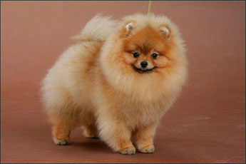

Померанский шпиц
Померанские шпицы очень живые и умные собачки. Из шпицев получаются прекрасные компаньоны.Они преданы своим владельцам, при этом совершенно не навязчивы.
Подробнее > Русский той-терьер
Жизнерадостные тои находят общий язык с каждым членом семьи, легко поддаются дрессировке. Собачек этой породы пускают в общественный транспорт и гостиницы.
Подробнее >
Мальтезе
Маленькие собачки мальтезе предназначены исключительно для человеческих рук, для уюта и тепла в доме, для эстетического удовольствия и для любви.
Подробнее >
Как выбрать щенка?
Какие стандарты породы? Что такое шоу-класс, брид-класс и пэт-класс? Мальчик или девочка? Какой окрас выбрать? Какого размера и веса должна быть собачка? Характер?
Какую породу выбрать?
Пушистые, игривые комочки шпицы? Невероятно жизнерадостные той-терьеры? Утонченная и нежная мальтезе?